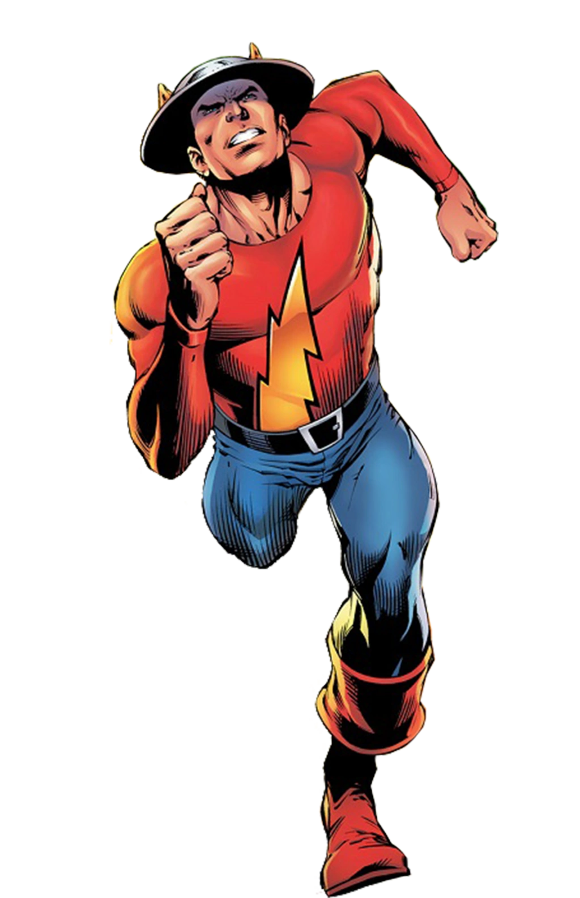

Informações do Jay Garrick
Voltar
Equipes DC

Criação do Jay Garrick
Jay Garrick é um personagem de quadrinhos da DC Comics, conhecido como o primeiro Flash.
Ele foi criado por Gardner Fox e Harry Lampert, fazendo sua primeira aparição em Flash Comics
#1, lançado em 1940.
O Personagem Jay Garrick
Jay Garrick é um estudante universitário que adquire superpoderes ao inalar acidentalmente vapores
de água pesada. Essa exposição o torna o Flash original, o velocista escarlate conhecido por
sua velocidade sobre-humana e icônico capacete com asas.
Como o Flash, Jay Garrick luta contra o crime e protege a cidade de Central City. Ele é membro da
Sociedade da Justiça da América e também atua como mentor e inspiração para outros
velocistas, incluindo Barry Allen e Wally West.
Quadrinhos Importantes do Jay Garrick
Jay Garrick teve várias histórias importantes nos quadrinhos, explorando suas aventuras solo e sua participação na Sociedade da Justiça. Aqui estão alguns dos quadrinhos mais relevantes do personagem:
"Flash Comics" (1940-1949):
Esta série apresentou as primeiras histórias do Flash original, Jay Garrick, em suas lutas contra vilões e sua vida como estudante universitário.
"Justice Society of America" (1940-1951):
Nessa série, Jay Garrick foi um dos membros fundadores da Sociedade da Justiça da América, uma equipe de super-heróis que combateu o crime durante a Era de Ouro dos quadrinhos.
"The Flash: Rebirth" (2009-2010):
Nessa história escrita por Geoff Johns e ilustrada por Ethan Van Sciver, Jay Garrick retorna como parte do renascimento do Universo DC, interagindo com outros velocistas como Barry Allen e Wally West.
Adaptações em Outras Mídias
Jay Garrick fez aparições em várias adaptações animadas e live-action, trazendo o primeiro Flash para outras mídias além dos quadrinhos. Aqui estão algumas das mais notáveis:
Série de TV "The Flash" (2014-presente):
Jay Garrick é interpretado por John Wesley Shipp na série de TV "The Flash". Shipp interpretou originalmente Barry Allen em uma série anterior do Flash nos anos 90 e retorna como Jay Garrick, o Flash de uma realidade alternativa.
Habilidades do Jay Garrick
Jay Garrick possui uma série de habilidades devido aos seus poderes de velocidade. Aqui estão algumas de suas principais habilidades:
Super velocidade:
Jay Garrick pode correr a velocidades incríveis, permitindo-lhe realizar proezas físicas impossíveis para humanos normais.
Reflexos aprimorados:
Sua velocidade também melhora seus reflexos, permitindo-lhe reagir rapidamente a situações perigosas.
Curar rapidamente:
Jay Garrick pode curar ferimentos e se recuperar rapidamente de lesões devido à sua alta velocidade metabólica.
Deslocamento temporal:
Como um velocista experiente, Jay Garrick é capaz de usar sua velocidade para viajar no tempo.
Conclusão
Jay Garrick, o primeiro Flash, é um personagem icônico da DC Comics. Com suas habilidades de velocidade e seu papel como mentor para outros velocistas, ele desempenhou um papel crucial no universo dos quadrinhos da DC. Ao longo das décadas, suas histórias exploraram a luta contra o crime, o trabalho em equipe e os desafios enfrentados por um herói movido pela velocidade. Sua popularidade foi além das páginas dos quadrinhos, com aparições em séries de TV e outras mídias. Jay Garrick continua sendo uma figura amada pelos fãs, simbolizando a tradição e o legado do Flash.